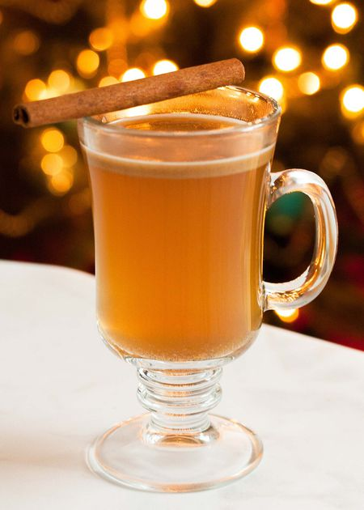

Hot Buttered Rum

Description
A drink sure to keep you warm and embrace the fall spirit! The butter flavor comes across subtly and creates a very smooth and drinkable holiday cocktail. Experiment with different rums to see which you prefer!
Ingredients (Makes 4 servings)
- 2 cups water
- 1/4 cup packed dark brown sugar
- 1/2 stick (1/4 cup) of unsalted butter
- 1 teaspoon cinnamon
- 1/4 teaspoon ground cloves
- 1/2 teaspoon nutmeg
- 1/8 teaspoon salt
- 2/3 cup dark rum
Steps
- Bring water, butter, brown sugar, cinnamon, nutmeg, cloves, and salt to a boil in a 1 1/2- to 2-quart saucepan over moderately high heat.
- Reduce heat and simmer, whisking occasionally for about 10 minutes.
- Remove from heat and stir in rum.
- Pour into 4 mugs and serve hot.
Back to home